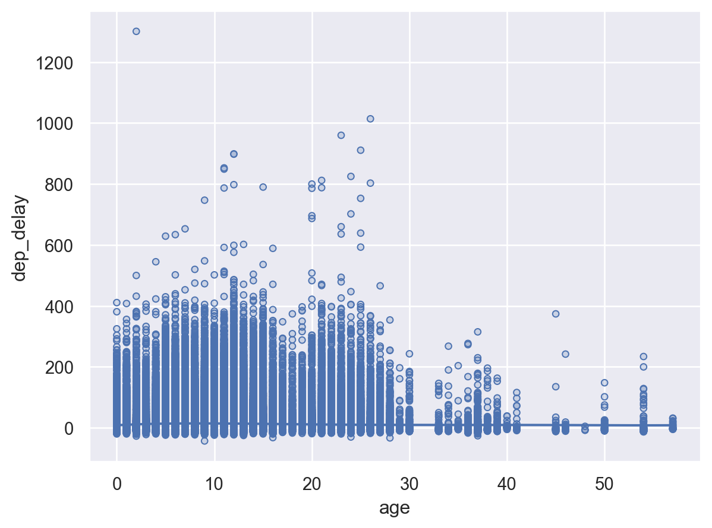
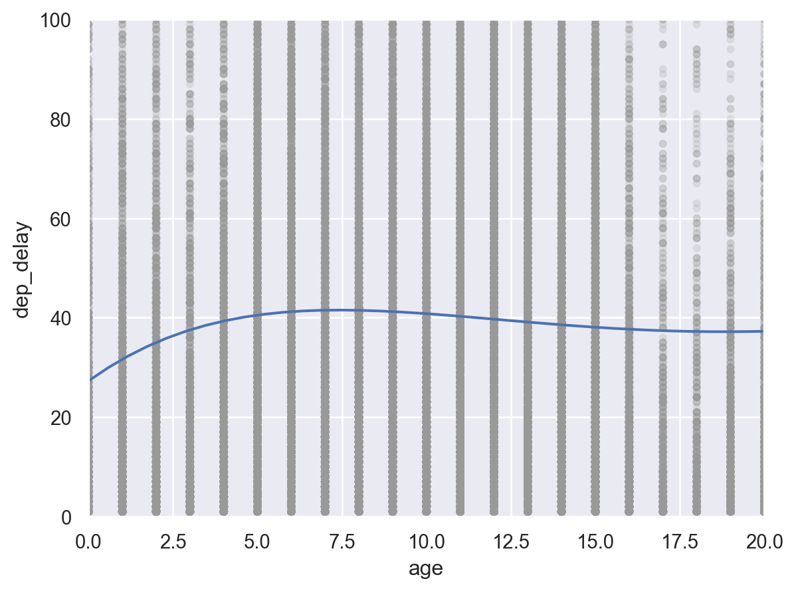
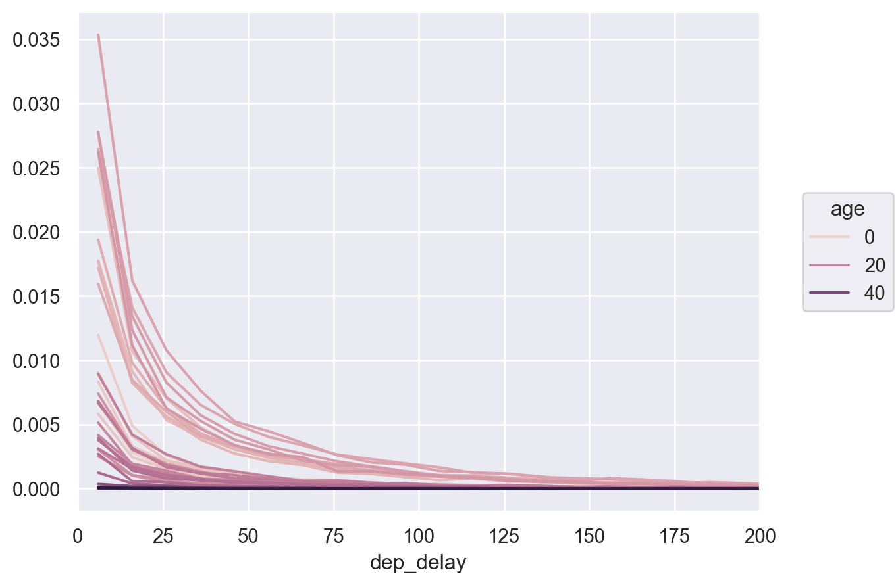
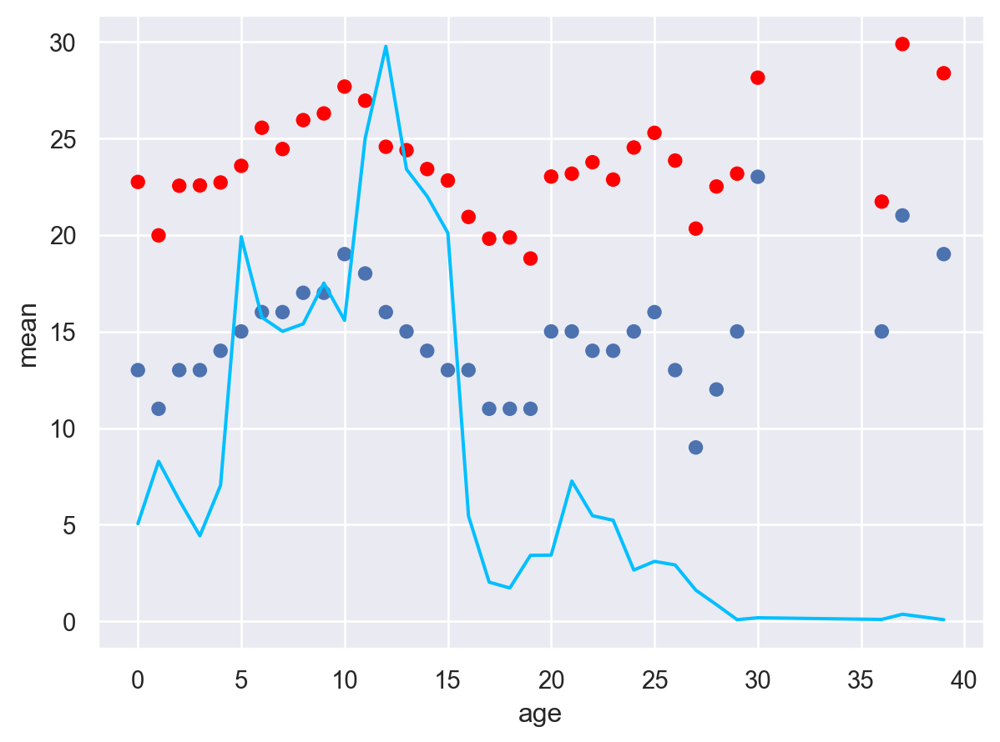
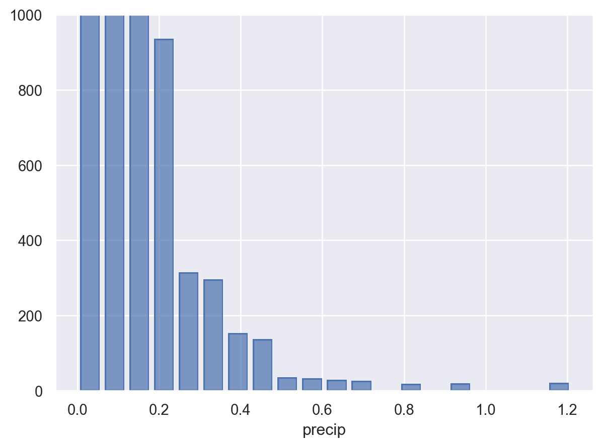
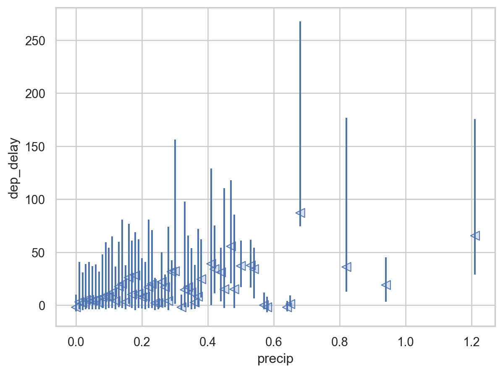
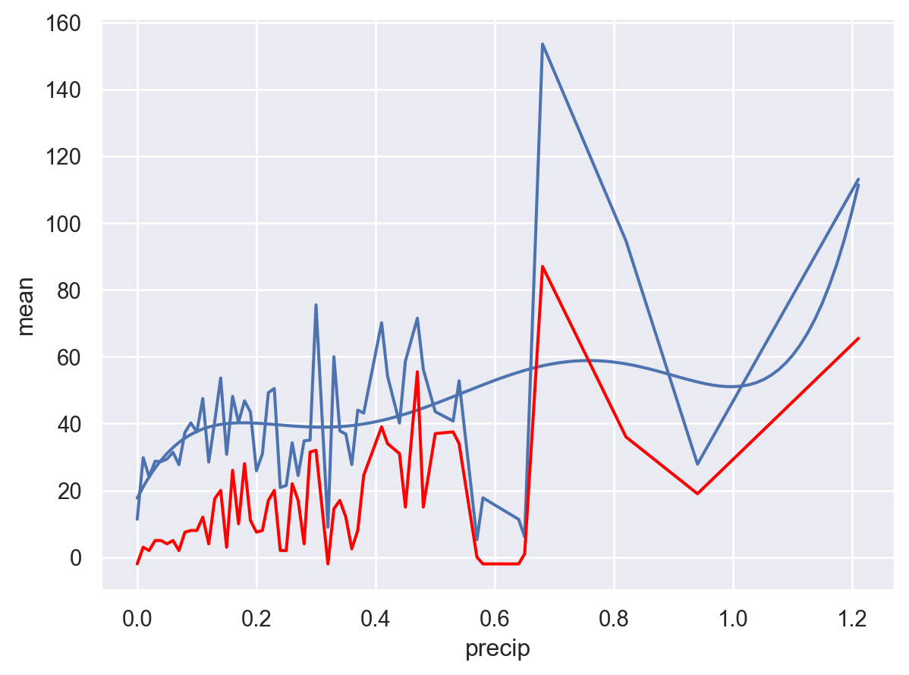
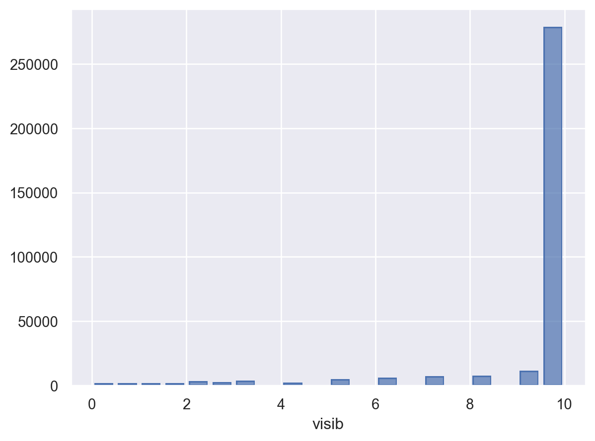
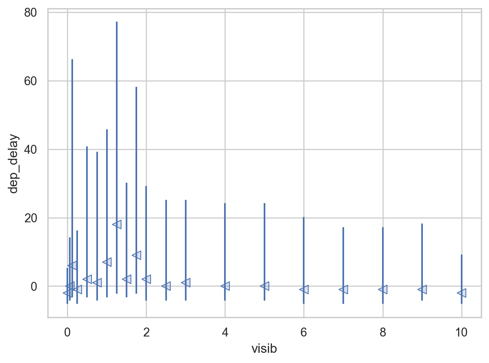
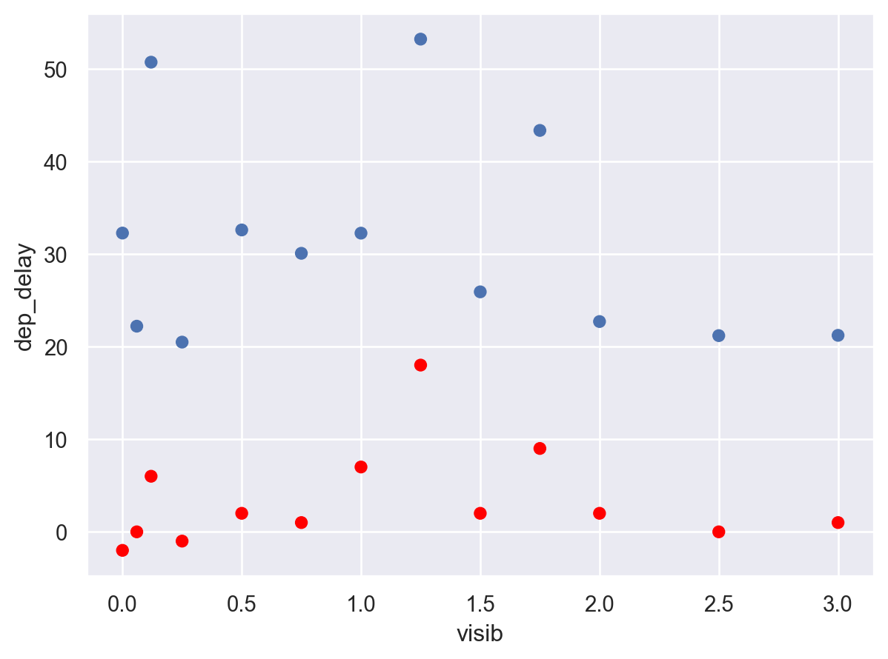

Load Packages
# numerical calculation & data frames
import numpy as np
import pandas as pd
# visualization
import matplotlib.pyplot as plt
import seaborn as sns
import seaborn.objects as so
# statistics
import statsmodels.api as smR for Data Science by Wickham & Grolemund
# numerical calculation & data frames
import numpy as np
import pandas as pd
# visualization
import matplotlib.pyplot as plt
import seaborn as sns
import seaborn.objects as so
# statistics
import statsmodels.api as sm# pandas options
pd.set_option("mode.copy_on_write", True)
pd.options.display.precision = 2
pd.options.display.float_format = '{:.2f}'.format # pd.reset_option('display.float_format')
pd.options.display.max_rows = 7
# Numpy options
np.set_printoptions(precision = 2, suppress=True)flights = pd.read_csv('data/flights.csv')
airlines = pd.read_csv('data/airlines.csv')
airports = pd.read_csv('data/airports.csv')
planes = pd.read_csv('data/planes.csv')
weather = pd.read_csv('data/weather.csv')# 1. Add the location of the origin and destination (i.e. the lat and lon in airports) to flights.airport_location = airports[['faa', 'lat', 'lon']]
airport_location faa lat lon
0 04G 41.13 -80.62
1 06A 32.46 -85.68
2 06C 41.99 -88.10
... ... ... ...
1455 ZWI 39.74 -75.55
1456 ZWU 38.90 -77.01
1457 ZYP 40.75 -73.99
[1458 rows x 3 columns]flights = flights.merge(airport_location, left_on='origin', right_on='faa').drop('faa', axis=1)# dest의 경우 airports에 없는 값이 존재
flights[~flights.dest.isin(airport_location.faa)] year month day dep_time sched_dep_time dep_delay arr_time \
21 2013 1 1 701.00 700 1.00 1123.00
57 2013 1 1 913.00 918 -5.00 1346.00
60 2013 1 1 926.00 929 -3.00 1404.00
... ... ... ... ... ... ... ...
336754 2013 9 30 2050.00 2045 5.00 20.00
336765 2013 9 30 2145.00 2145 0.00 115.00
336774 2013 9 30 2349.00 2359 -10.00 325.00
sched_arr_time arr_delay carrier flight tailnum origin dest \
21 1154 -31.00 UA 1203 N77296 EWR SJU
57 1416 -30.00 UA 1519 N24715 EWR STT
60 1421 -17.00 B6 215 N775JB EWR SJU
... ... ... ... ... ... ... ...
336754 53 -33.00 DL 347 N396DA JFK SJU
336765 140 -25.00 B6 1103 N633JB JFK SJU
336774 350 -25.00 B6 745 N516JB JFK PSE
air_time distance hour minute lat lon
21 188.00 1608 7 0 40.69 -74.17
57 189.00 1634 9 18 40.69 -74.17
60 191.00 1608 9 29 40.69 -74.17
... ... ... ... ... ... ...
336754 188.00 1598 20 45 40.64 -73.78
336765 192.00 1598 21 45 40.64 -73.78
336774 196.00 1617 23 59 40.64 -73.78
[7602 rows x 20 columns]# how="left" 필요, suffixes 옵션 사용하면 편리
flights = flights.merge(
airport_location,
left_on="dest",
right_on="faa",
how="left",
suffixes=("_origin", "_dest"),
).drop("faa", axis=1)flights year month day dep_time sched_dep_time dep_delay arr_time \
0 2013 1 1 517.00 515 2.00 830.00
1 2013 1 1 554.00 558 -4.00 740.00
2 2013 1 1 555.00 600 -5.00 913.00
... ... ... ... ... ... ... ...
336773 2013 9 30 2307.00 2255 12.00 2359.00
336774 2013 9 30 2349.00 2359 -10.00 325.00
336775 2013 9 30 NaN 1455 NaN NaN
sched_arr_time arr_delay carrier ... origin dest air_time distance \
0 819 11.00 UA ... EWR IAH 227.00 1400
1 728 12.00 UA ... EWR ORD 150.00 719
2 854 19.00 B6 ... EWR FLL 158.00 1065
... ... ... ... ... ... ... ... ...
336773 2358 1.00 B6 ... JFK BOS 33.00 187
336774 350 -25.00 B6 ... JFK PSE 196.00 1617
336775 1634 NaN 9E ... JFK DCA NaN 213
hour minute lat_origin lon_origin lat_dest lon_dest
0 5 15 40.69 -74.17 29.98 -95.34
1 5 58 40.69 -74.17 41.98 -87.90
2 6 0 40.69 -74.17 26.07 -80.15
... ... ... ... ... ... ...
336773 22 55 40.64 -73.78 42.36 -71.01
336774 23 59 40.64 -73.78 NaN NaN
336775 14 55 40.64 -73.78 38.85 -77.04
[336776 rows x 22 columns]# 2. Is there a relationship between the age of a plane and its delays?
plane_age = (
planes[["tailnum", "year"]]
.merge(flights, on="tailnum", how="right", suffixes=("_plane", ""))
.drop("tailnum", axis=1)
.assign(age=lambda x: x.year - x.year_plane)
)plane_age.head(3) year_plane year month day dep_time sched_dep_time dep_delay
0 1999.00 2013 1 1 517.00 515 2.00 \
1 2012.00 2013 1 1 554.00 558 -4.00
2 2000.00 2013 1 1 555.00 600 -5.00
arr_time sched_arr_time arr_delay ... dest air_time distance hour
0 830.00 819 11.00 ... IAH 227.00 1400 5 \
1 740.00 728 12.00 ... ORD 150.00 719 5
2 913.00 854 19.00 ... FLL 158.00 1065 6
minute lat_origin lon_origin lat_dest lon_dest age
0 15 40.69 -74.17 29.98 -95.34 14.00
1 58 40.69 -74.17 41.98 -87.90 1.00
2 0 40.69 -74.17 26.07 -80.15 13.00
[3 rows x 23 columns](
so.Plot(plane_age, x='age', y='dep_delay')
.add(so.Dots())
.add(so.Line(), so.PolyFit(5))
)
(
so.Plot(plane_age.query('dep_delay > 0'), x='age', y='dep_delay')
.add(so.Dots(alpha=.1, color=".6"))
.add(so.Line(), so.PolyFit(5))
.limit(y=(0, 100), x=(0, 20))
)
(
so.Plot(plane_age.query('dep_delay > 0'), x='dep_delay', color="age")
.add(so.Line(), so.Hist(stat="proportion", binwidth=10))
.limit(x=(0, 200))
)
age_delay = (
plane_age.query('dep_delay > 0 & dep_delay < 100')
.groupby("age")["dep_delay"]
.agg(["mean", "median", "count"])
.reset_index()
)
age_delay age mean median count
0 0.00 22.73 13.00 1686
1 1.00 19.97 11.00 2761
2 2.00 22.54 13.00 2092
.. ... ... ... ...
43 50.00 19.88 14.50 16
44 54.00 26.62 15.00 26
45 57.00 14.91 13.00 11
[46 rows x 4 columns](
so.Plot(age_delay.query('count > 30'), x='age')
.add(so.Dot(color="red"), y="mean")
.add(so.Dot(), y="median")
.add(so.Line(color="deepskyblue"), y=age_delay["count"]/1000*3)
)
# 3. What weather conditions make it more likely to see a delay?flights_weather = flights.merge(weather)# 강수량 precipitation
(
so.Plot(flights_weather, x='precip')
.add(so.Bar(), so.Hist())
.limit(y=(0, 1000))
)
from sbcustom import *
rangeplot(flights_weather, "precip", "dep_delay")
# 강수량 precipitation
precip = flights_weather.groupby("precip")["dep_delay"].agg(["mean", "median"]).reset_index()
precip precip mean median
0 0.00 11.37 -2.00
1 0.01 29.80 3.00
2 0.02 24.08 2.00
.. ... ... ...
52 0.82 94.67 36.00
53 0.94 27.85 19.00
54 1.21 113.11 65.50
[55 rows x 3 columns](
so.Plot(precip, x='precip', y="mean")
.add(so.Line())
.add(so.Line(), so.PolyFit(5))
.add(so.Line(color="red"), y="median")
)
# 시야 visibility
(
so.Plot(flights_weather, x='visib')
.add(so.Bar(), so.Hist())
)
rangeplot(flights_weather, "visib", "dep_delay")
(
so.Plot(flights_weather.query('visib < 4'), x='visib', y='dep_delay')
.add(so.Dot(), so.Agg())
.add(so.Dot(color="red"), so.Agg("median"))
#.limit(y=(0, 100))
)
# 4. flights 테이블에서 하루 평균 도착지연(arr_delay)가 가장 큰 10일에 해당하는 항공편을 선택delay_top = flights.groupby(["year", "month", "day"])["arr_delay"].mean().sort_values(ascending=False).head(10)
delay_topyear month day
2013 3 8 85.86
6 13 63.75
7 22 62.76
...
12 17 55.87
8 8 55.48
12 5 51.67
Name: arr_delay, Length: 10, dtype: float64flights.merge(delay_top.reset_index(name="daily_delay"), on=["year", "month", "day"]) year month day dep_time sched_dep_time dep_delay arr_time \
0 2013 12 5 32.00 1930 302.00 228.00
1 2013 12 5 50.00 2046 244.00 233.00
2 2013 12 5 457.00 500 -3.00 637.00
... ... ... ... ... ... ... ...
9834 2013 9 12 NaN 1510 NaN NaN
9835 2013 9 12 NaN 2015 NaN NaN
9836 2013 9 12 NaN 1829 NaN NaN
sched_arr_time arr_delay carrier ... dest air_time distance hour \
0 2136 292.00 EV ... CHS 94.00 628 19
1 2224 249.00 EV ... GSO 80.00 445 20
2 651 -14.00 US ... CLT 81.00 529 5
... ... ... ... ... ... ... ... ...
9834 1630 NaN MQ ... DCA NaN 213 15
9835 2155 NaN MQ ... CMH NaN 483 20
9836 1939 NaN MQ ... BWI NaN 184 18
minute lat_origin lon_origin lat_dest lon_dest daily_delay
0 30 40.69 -74.17 32.90 -80.04 51.67
1 46 40.69 -74.17 36.10 -79.94 51.67
2 0 40.69 -74.17 35.21 -80.94 51.67
... ... ... ... ... ... ...
9834 10 40.64 -73.78 38.85 -77.04 58.91
9835 15 40.64 -73.78 40.00 -82.89 58.91
9836 29 40.64 -73.78 39.18 -76.67 58.91
[9837 rows x 23 columns]#5. flights 테이블의 도착지(dest)에 대한 공항정보가 airports 테이블에 없는 그러한 도착지(dest)를 구하면?
flights[~flights.dest.isin(airports.faa)] year month day dep_time sched_dep_time dep_delay arr_time \
21 2013 1 1 701.00 700 1.00 1123.00
57 2013 1 1 913.00 918 -5.00 1346.00
60 2013 1 1 926.00 929 -3.00 1404.00
... ... ... ... ... ... ... ...
336754 2013 9 30 2050.00 2045 5.00 20.00
336765 2013 9 30 2145.00 2145 0.00 115.00
336774 2013 9 30 2349.00 2359 -10.00 325.00
sched_arr_time arr_delay carrier ... origin dest air_time distance \
21 1154 -31.00 UA ... EWR SJU 188.00 1608
57 1416 -30.00 UA ... EWR STT 189.00 1634
60 1421 -17.00 B6 ... EWR SJU 191.00 1608
... ... ... ... ... ... ... ... ...
336754 53 -33.00 DL ... JFK SJU 188.00 1598
336765 140 -25.00 B6 ... JFK SJU 192.00 1598
336774 350 -25.00 B6 ... JFK PSE 196.00 1617
hour minute lat_origin lon_origin lat_dest lon_dest
21 7 0 40.69 -74.17 NaN NaN
57 9 18 40.69 -74.17 NaN NaN
60 9 29 40.69 -74.17 NaN NaN
... ... ... ... ... ... ...
336754 20 45 40.64 -73.78 NaN NaN
336765 21 45 40.64 -73.78 NaN NaN
336774 23 59 40.64 -73.78 NaN NaN
[7602 rows x 22 columns]# 6. Filter flights (항공편) in flights to only show flights with planes that have flown at least 100 flights.
n_planes = (
flights.groupby("tailnum")["flight"].count()
.reset_index(name="n")
.query('n >= 100')
)
n_planes tailnum n
1 N0EGMQ 371
2 N10156 153
6 N10575 289
... ... ...
4003 N979DL 126
4036 N996DL 102
4042 N9EAMQ 248
[1217 rows x 2 columns]flights.merge(n_planes) year month day dep_time sched_dep_time dep_delay arr_time \
0 2013 1 1 517.00 515 2.00 830.00
1 2013 1 8 1435.00 1440 -5.00 1717.00
2 2013 1 9 717.00 700 17.00 812.00
... ... ... ... ... ... ... ...
228387 2013 9 26 1758.00 1759 -1.00 2101.00
228388 2013 9 29 1112.00 1115 -3.00 1342.00
228389 2013 9 30 654.00 700 -6.00 956.00
sched_arr_time arr_delay carrier ... dest air_time distance hour \
0 819 11.00 UA ... IAH 227.00 1400 5
1 1746 -29.00 UA ... MIA 150.00 1085 14
2 815 -3.00 UA ... BOS 39.00 200 7
... ... ... ... ... ... ... ... ...
228387 2102 -1.00 UA ... LAX 316.00 2475 17
228388 1415 -33.00 UA ... LAX 309.00 2475 11
228389 1020 -24.00 UA ... SFO 333.00 2586 7
minute lat_origin lon_origin lat_dest lon_dest n
0 15 40.69 -74.17 29.98 -95.34 111
1 40 40.69 -74.17 25.79 -80.29 111
2 0 40.69 -74.17 42.36 -71.01 111
... ... ... ... ... ... ...
228387 59 40.64 -73.78 33.94 -118.41 273
228388 15 40.64 -73.78 33.94 -118.41 273
228389 0 40.64 -73.78 37.62 -122.37 273
[228390 rows x 23 columns]# 7. Find the 48 hours (over the course of the whole year) that have the worst (departure) delays.(
flights.groupby(["year", "month", "day", "hour"])["dep_delay"]
.mean()
.nlargest(48)
)year month day hour
2013 2 9 10 269.00
4 10 22 176.40
20 170.16
...
19 21 117.12
6 24 17 116.11
3 8 11 115.62
Name: dep_delay, Length: 48, dtype: float64# 8. You might expect that there’s an implicit relationship between plane and airline, because each plane is flown by a single airline. Confirm or reject this hypothesis using the tools you’ve learned above.# 즉, 각 비행기는 특정 항공사에서만 운행되는가의 질문임. 2개 이상의 항공사에서 운항되는 비행기가 있는지 확인해 볼 것
planes_carriers = (
flights.value_counts(["tailnum", "carrier"]).reset_index().drop(columns="count")
)
planes_carriers tailnum carrier
0 N725MQ MQ
1 N722MQ MQ
2 N723MQ MQ
... ... ...
4057 N670US DL
4058 N955DN DL
4059 N8618N WN
[4060 rows x 2 columns]planes_share = (
planes_carriers.groupby("tailnum")["carrier"]
.count()
.reset_index(name="n")
.query("n > 1")
)
planes_share tailnum n
195 N146PQ 2
224 N153PQ 2
342 N176PQ 2
... ... ..
4021 N989AT 2
4023 N990AT 2
4031 N994AT 2
[17 rows x 2 columns]# 또는 nunique() 사용하면,
(
flights.groupby("tailnum")["carrier"].nunique()
.reset_index(name="n")
.query("n > 1")
) tailnum n
195 N146PQ 2
224 N153PQ 2
342 N176PQ 2
... ... ..
4021 N989AT 2
4023 N990AT 2
4031 N994AT 2
[17 rows x 2 columns]# 그리고, 2개 이상의 항공사에서 운항되는 비행기들만 포함하고, 그 항공사들의 full name을 함께 포함하는 테이블을 만들어 볼 것
flights.merge(planes_share).merge(airlines) year month day dep_time sched_dep_time dep_delay arr_time \
0 2013 1 11 1244.00 1250 -6.00 1459.00
1 2013 1 11 1821.00 1830 -9.00 2014.00
2 2013 1 15 612.00 615 -3.00 927.00
.. ... ... ... ... ... ... ...
821 2013 7 9 2224.00 1859 205.00 16.00
822 2013 7 14 1310.00 1310 0.00 1532.00
823 2013 8 27 1324.00 1310 14.00 1525.00
sched_arr_time arr_delay carrier ... air_time distance hour minute \
0 1449 10.00 9E ... 92.00 488 12 50
1 2044 -30.00 9E ... 79.00 488 18 30
2 855 32.00 9E ... 134.00 760 6 15
.. ... ... ... ... ... ... ... ...
821 2121 175.00 FL ... 95.00 762 18 59
822 1532 0.00 FL ... 108.00 762 13 10
823 1536 -11.00 FL ... 98.00 762 13 10
lat_origin lon_origin lat_dest lon_dest n \
0 40.69 -74.17 42.21 -83.35 2
1 40.69 -74.17 42.21 -83.35 2
2 40.64 -73.78 33.64 -84.43 2
.. ... ... ... ... ..
821 40.78 -73.87 33.64 -84.43 2
822 40.78 -73.87 33.64 -84.43 2
823 40.78 -73.87 33.64 -84.43 2
name
0 Endeavor Air Inc.
1 Endeavor Air Inc.
2 Endeavor Air Inc.
.. ...
821 AirTran Airways Corporation
822 AirTran Airways Corporation
823 AirTran Airways Corporation
[824 rows x 24 columns]